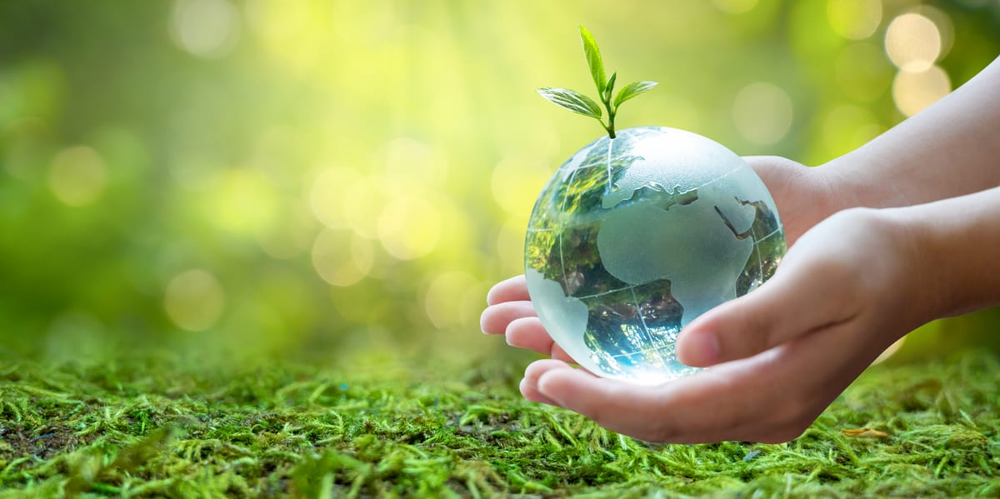
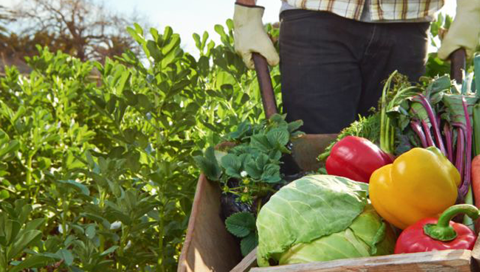
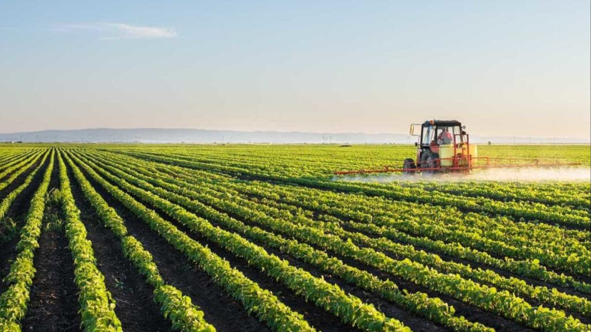

Agricultura Sustentável
A agricultura sustentável é um sistema de produção agrícola que busca atender às necessidades presentes sem comprometer as gerações futuras. Ela se baseia em práticas que promovem a conservação dos recursos naturais, a proteção do meio ambiente, a saúde humana e a viabilidade econômica dos agricultores. Alguns conceitos básicos da agricultura sustentável incluem:
Conservação do solo: A agricultura sustentável preza pela manutenção da qualidade do solo, evitando sua erosão e degradação. Isso pode ser alcançado por meio de práticas como rotação de culturas, plantio direto (sem aração), adição de matéria orgânica ao solo e uso adequado de fertilizantes e pesticidas.
Uso eficiente da água: A gestão sustentável dos recursos hídricos é essencial na agricultura sustentável. Técnicas como irrigação por gotejamento, captação de água da chuva, reuso de água e manejo adequado dos sistemas de irrigação são adotadas para reduzir o consumo de água e evitar desperdícios.
Manejo integrado de pragas e doenças: Em vez de depender exclusivamente de pesticidas químicos, a agricultura sustentável promove o uso de técnicas de controle integrado de pragas e doenças. Isso envolve o monitoramento e a adoção de medidas preventivas, como o uso de plantas repelentes, o controle biológico de pragas e a rotação de culturas para reduzir a propagação de doenças.
- 
- 
- 
Diversificação de culturas: A monocultura intensiva pode ser prejudicial ao meio ambiente e à sustentabilidade agrícola. A diversificação de culturas é uma prática fundamental na agricultura sustentável, pois ajuda a reduzir a erosão do solo, a incidência de pragas e doenças e a dependência de agroquímicos. Além disso, ela promove a segurança alimentar e a resiliência dos sistemas agrícolas.
Uso de energia renovável: A agricultura sustentável busca reduzir a dependência de combustíveis fósseis, promovendo o uso de energias renováveis. Isso pode ser feito através da utilização de painéis solares para geração de energia, o uso de biodigestores para produção de biogás a partir de resíduos orgânicos e a adoção de maquinário eficiente em termos energéticos.
Preservação da biodiversidade: A agricultura sustentável reconhece a importância da biodiversidade para a saúde dos ecossistemas agrícolas. Práticas como a criação de áreas de preservação, a integração de habitats naturais no entorno das áreas cultivadas e a promoção de corredores ecológicos contribuem para a conservação da biodiversidade.
Exemplos de práticas agrícolas sustentáveis incluem a agroecologia, a permacultura, a agricultura orgânica, a agricultura de conservação, a agricultura de precisão e a agrossilvicultura. Essas abordagens levam em consideração os princípios mencionados acima e buscam criar sistemas agrícolas mais eficientes e menos prejudiciais ao meio ambiente